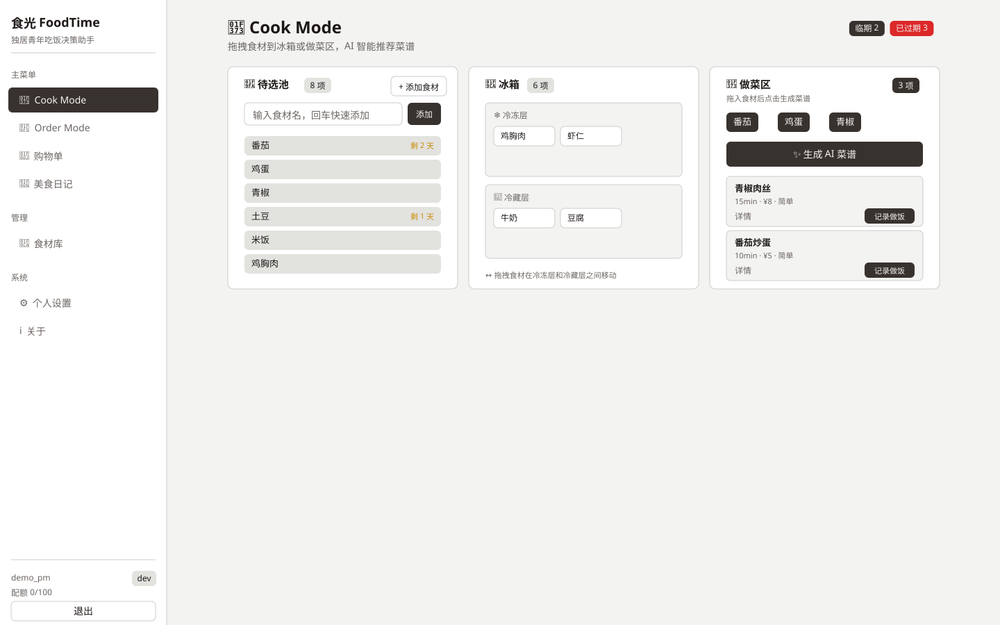
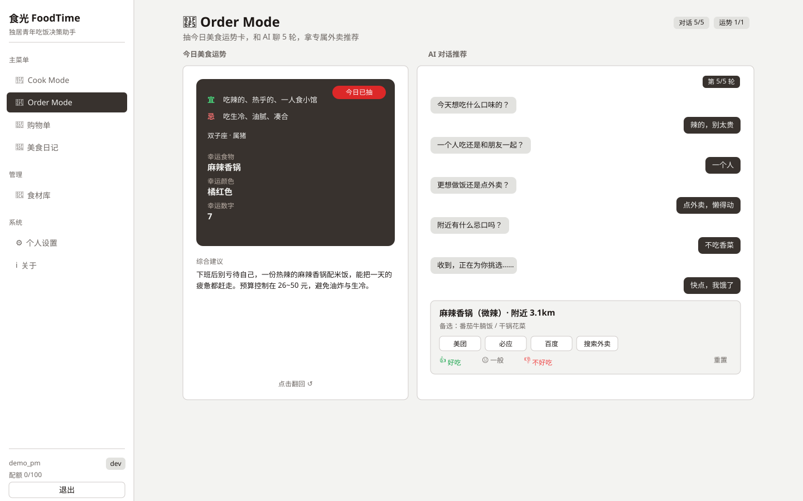

登录
未登录 · 账号密码进入 · 1440×900

共 10 个页面 · 1440 宽 · 矢量 SVG。
导入 Figma：打开 Figma 文件 → 直接把 out 文件夹里的 .svg 拖进画布（或菜单 File → 拖入），每个页面会自动变成可编辑的图层、文字和形状。
提示：文字使用 PingFang SC / 微软雅黑，若 Figma 提示缺字体，替换为任意中文字体即可，版式不变。
未登录 · 账号密码进入 · 1440×900
未登录 · 创建账户（手机号选填） · 1440×900

登录后首页 · 配额 / 临期 / 快捷入口 · 1440×900

做饭 · 待选池 + 冰箱 + 做菜区 + AI 菜谱 · 1440×900

点单 · 美食运势卡 + 5 轮 AI 对话 + 外卖推荐 · 1440×900

按菜谱缺料自动生成，勾选后移入冰箱 · 1440×900

冰箱台账 · 临期/过期提醒 + 筛选 · 1440×900

记录列表 + 饮食热力图 + 偏好权重 · 1440×900

★ 修复 1080p 裁切后的版本，整页一屏可见 · 1440×900

项目信息 + 核心能力清单 · 1440×900